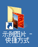

Windows7 基础入门教程
作者：TeliuTe 来源：基础教程网
一、认识桌面 返回目录 下一课Windows操作系统启动成功就会显示一个界面，我们称为“桌面”，桌面是我们认识电脑的第一步；
1、桌面
1）工作区 桌面上的大片空白称为工作区，上面可以放置各种图标，打开的窗口，桌面上一般放置几个固定的图标和带箭头的快捷方式图标；
2）图标 图标是一个小图片下面有文字，一个图标代表一个文件或者是一个程序， 鼠标点击的时候，一般瞄准图标；
3）快捷方式 快捷方式的图标下面有一个小箭头，它是指向程序的一个快捷图标，程序一般放在专门的文件夹里头，

2、任务栏
1）任务栏 桌面最下面的一个长条叫任务栏，目前运行的程序都会在任务栏上显示一个小格子，上面有图标和名称，表示现在正在运行，最左边是“开始”按钮，最右边是“系统托盘”；
2）文件夹 文件夹的图标是一个包，里面可以装很多的文件，不同类别的文件放在不同的包里；
3）开始按钮 它是最左边的一个图标，点击一下 它，出来的叫“开始菜单”，菜单只要点一下鼠标就可以了；
4）菜单 菜单是一些命令，我们操作电脑，就是让电脑执行各个命令，常见的复制、粘贴等等都是命令，教程中一般用双引号括起来；
练习：
1）记住桌面上的常用的图标和它们的名称，说出它们的用途；
2）在工作区空白处单击一下鼠标右键，看一下出现的菜单，接着用左键单击其中的“刷新”命令（没指明的单击均指左键），练上三遍；
3）单击一下“开始”按钮，看看出现的菜单，注意带一个黑色三角的表示里面还有子菜单，
将鼠标移动到“所有程序”命令处，看看出来的下一级菜单，再平平的顺着蓝色移动到下一级菜单里，
在下一级菜单里上下移动一下（别点鼠标、 只是移动），再按原路移回来，
再在“开始”按钮上单击一下关掉菜单，电脑上一般是 循环的，练上三遍，直至熟练位置为止；
本节学习了桌面的基础知识，如果你成功地完成了练习，请继续学习下一课内容；
本教程由86团学校TeliuTe制作|著作权所有
基础教程网：>http://teliute.org/
美丽的校园……
转载和引用本站内容，请保留版权信息和本站链接。